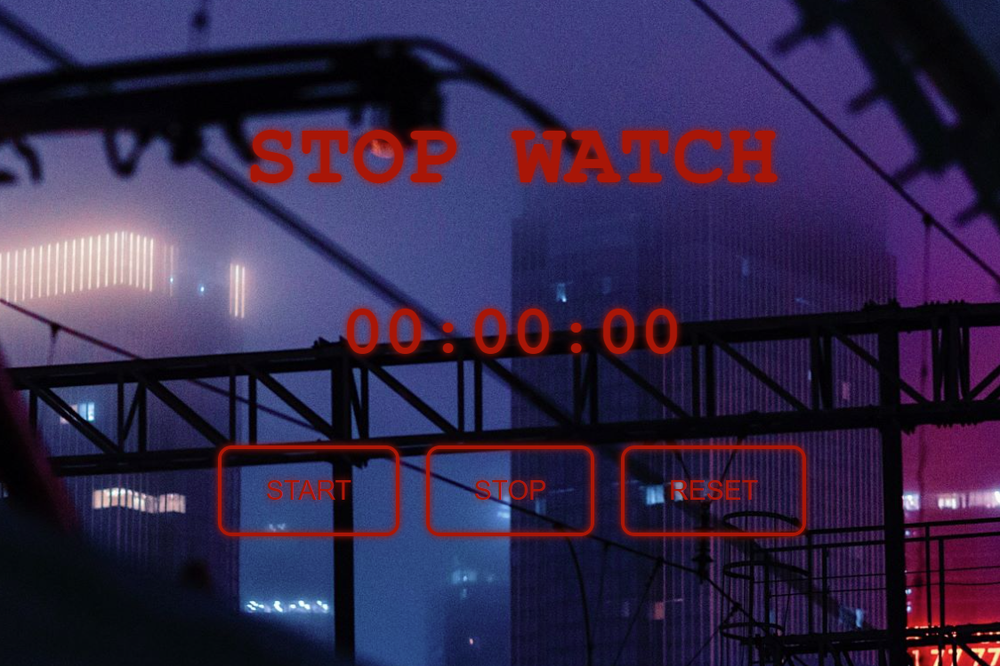

Stop Watch

This is a simple functional stop watch project i made using html and css with JavaScript for behaviors.
The way it works is so simple, you will have 3 elements for the numbers and each one has a unique id, one for tens and one for seconds and one for minutes and you update each one of them using JavaScript interval function.
I have also added a sound effect when you press the start button which only triggers when the counter is 0.